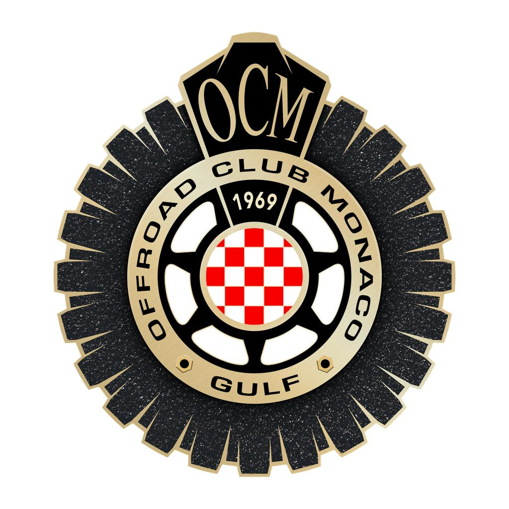

Ogni contenuto lascia una traccia. Come il club.
Un club privato internazionale nato a Monaco: sport outdoor, viaggi, cultura, tecnologia. Esclusivo, ma con una missione.
Avventura e responsabilità insieme: il record in moto d'acqua a bioetanolo, il legame con la Fondazione Principe Alberto II, il comitato accademico.
I fondatori non appaiono mai. A parlare sono Mr. The Wake, i mezzi, i luoghi e gli eventi del club.
«The Wake of Monaco» è già il vostro claim. Noi lo trasformiamo in un linguaggio visivo.
Tocca l'altoparlante per l'audio
La mascotte del club, nel suo studio a Monaco di notte, apre il sito e fa nascere l'ologramma della galassia OCM. Un format a episodi: stesso set, stessa luce, ogni volta una sezione diversa.
Tocca l'altoparlante per l'audio
Trekking, parapendio, sci, enduro, vetta. Ritmo veloce, transizioni dentro la scena: la neve dello sci diventa la polvere dell'enduro, lo scarpone sale fino alla bandiera OCM sopra le nuvole.
Tocca l'altoparlante per l'audio
La motoslitta Taiga all'alba in una valle intatta. Dal drone, le sue tracce scrivono OCM nella neve. È il concept della scia nella forma più pura.
Tocca l'altoparlante per l'audio
Lo stand Taiga in fiera, girato e montato dal vero: dettagli, materiali, display. Non solo AI: montiamo anche il vostro girato di eventi, fiere e uscite del club, con lo stesso stile. E possiamo unire i due mondi: dallo stand in fiera alla neve vera, con una transizione AI.
Ci dite quali contenuti volete raccontare: eventi, sezioni del club, partner, appuntamenti.
Li organizziamo in un piano con le date, due contenuti a settimana. Lo approvate o lo correggete.
Realizziamo i contenuti approvati: AI, girato reale o ibridi, con controllo fotogramma per fotogramma.
Tutto pronto qualche giorno prima dell'uscita. Pubblicate voi.
Ci dite quali contenuti volete per il primo mese.
Vi mandiamo il piano editoriale e il preventivo.
Dopo il vostro ok, partiamo con la produzione.
The Wake of Monaco.